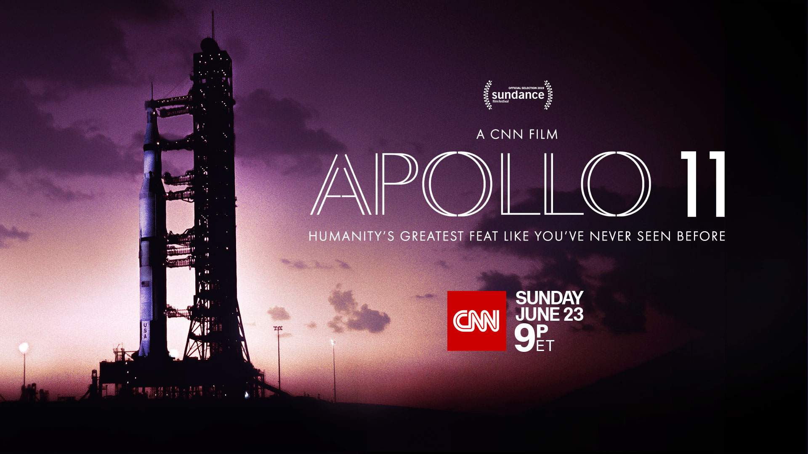

← Back to Home
Apollo 11
Apollo 11 is a 2019 American documentary film directed by Todd Douglas Miller. The film chronicles the July 1969 Apollo 11 mission, which was the first manned mission to land on the Moon. It features archival footage and audio recordings from the mission, providing a detailed and immersive look at this historic event.